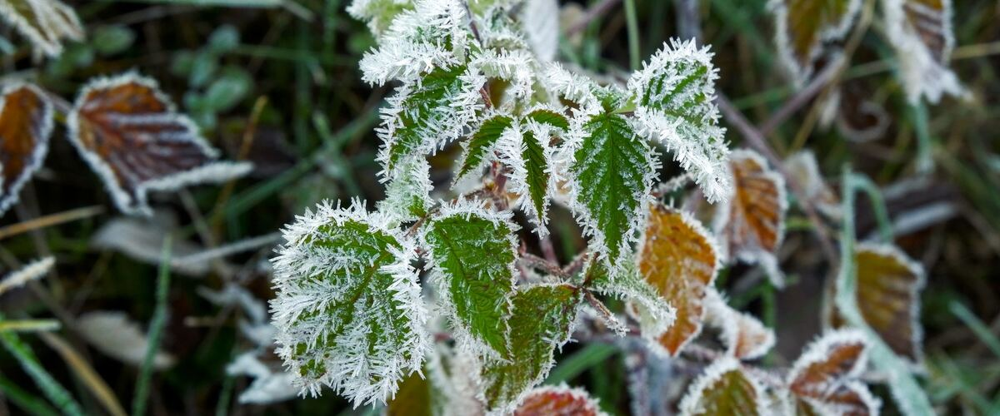

Timing and seasons · Oregon · Washington · Idaho
What Your Last Frost Date Really Means
A last frost date isn't a promise. Here's what the number on a planting chart actually measures, and how to use it without losing your tomatoes.
Almost every planting chart is built around one number: your last frost date. Seed packets say "sow 2 weeks after last frost" and "start indoors 6 weeks before last frost." But that date is easy to misread, and the misreading is how a lot of tomato plants die in May.
It's an average, not a deadline
The frost dates on Rainline Garden come from NOAA's U.S. Climate Normals, which summarize 30 years of daily temperature records (1991 to 2020) at official weather stations. For each station, NOAA works out the odds of a freeze, meaning 32°F or colder, after each day in spring.
The date most charts call the "last frost date" is the median. In half of years the last spring freeze comes before it, and in half of years it comes after. Planting tender crops on that exact day is a coin flip.
That's why Rainline Garden also shows a safer date: the day after which there's only a 10% chance of another freeze. At Portland International Airport, for example:
- Median last freeze: March 13
- Only a 10% chance of a freeze after: April 1
Nearby towns can be weeks apart
Frost dates change quickly with elevation and terrain. Cold air drains downhill on calm, clear nights and pools in low spots, so a valley floor can freeze when a hillside a mile away doesn't. Compare the median last freeze at a few stations:
- Seattle-Tacoma airport: March 2
- Portland airport: March 13
- Olympia airport: April 29, nearly two months after Seattle even though the two are less than 60 miles apart
- Redmond, for the Bend area: June 9
Your own yard may run earlier or later than the nearest station. A low spot at the bottom of a slope tends to be colder; a bed against a south-facing wall in the city tends to be warmer.
Frost can form above 32°F
Official air temperatures are measured about five feet above the ground. On clear, still nights the ground and the leaves of low plants lose heat fast and can be several degrees colder than that. So a forecast low of 35°F can still leave frost on your lettuce. When the forecast is in the mid-30s, cover tender plants anyway.
Frost-free doesn't mean warm enough
The last frost date only tells you when freezing becomes unlikely. Tomatoes, peppers, basil, beans and squash also need warm soil and mild nights, which in the Northwest often arrive weeks later. That's why Rainline Garden's planting windows for warm crops start after the frost date, not on it. Read more in why to plant by soil temperature.
How to use your dates
- Plant frost-hardy crops like peas, spinach and kale around the median date or even before it.
- Plant tender crops after the 10% date, and once the soil has warmed.
- Keep row cover or old sheets handy for a few weeks after you plant, in case of a late cold night.
- Watch the forecast, not just the calendar. A chart is a starting point; the weather this week is what matters.
Look up the dates for your town on the frost dates page, or enter your ZIP to get a full planting calendar built on them.